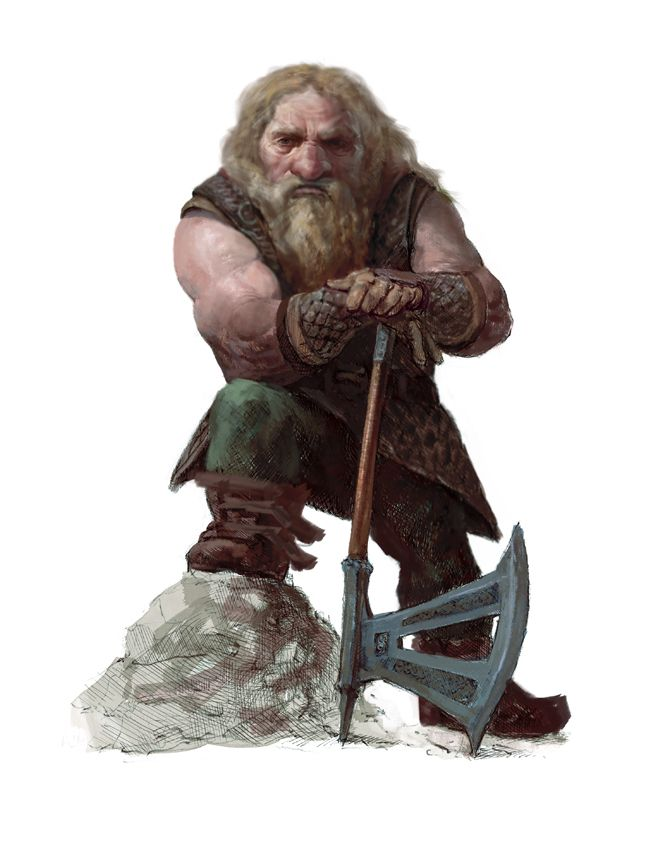

Дварф (Dwarf)
Описание
Дварфы низкорослы и коренасты. В среднем дварф ниже человека примерно на фут, зато широкоплеч и крепок. И мужчины, и женщины у дварфов гордятся длиной своих волос, мужчины часто заплетают бороды и украшают их заколками и бусинами. Чисто выбритый мужской подбородок у дварфов - явный признак безумия или чего похуже. Те, кто знаком с обычаями этого народа, не доверяют безбородым дварфам!
Общество
Огромные расстояния, разделяющие поселения дварфов, привели к широкому разнообразию их обычаев в разных местах. Но, несмотря на все расхождения, дварфов объединяют любовь к зодчеству, страсть к работе с металлом и камнем и жгучая ненависть к великанам, оркам и гоблиноидам.
Отношения с другими расами
Дварфы долгое время обитали по соседству с орками. Они делят историю непрерывной вражды, древней, как оба эти народа. Дварфы обычно не доверяют полуоркам и сторонятся их. Они считают полуросликов, эльфов и гномов слишком хлипкими, ветреными и легкомысленными, чтобы уважать их по-настоящему. Только люди для дварфов представляются родственными душами - трудолюбие и здоровый аппетит хоть как-то приближают людей к дварфийскому идеалу.
Мировоззрение и религия
Дварфами движут честь и традиции. И хотя их часто изображают замкнутыми, дварфы тонко чувствуют и ценят справедливость и дружбу. Те, кто смог завоевать их доверие, осознают, что дварфы любят не только работать, но и отдыхать, особенно когда есть хороший эль. Мировоззрение большинства дварфов принципиальное доброе. Они предпочитают поклоняться богам, разделяющим их взгляды на жизнь, поэтому чаще всего выбирают Торага, хотя широко распространено также почитание Абадара и Горума.
Искатели приключений
Хотя искателей приключений среди дварфов меньше, чем среди людей, их можно встретить в большинстве регионов мира. Дварфы часто покидают пределы своих крепостей, чтобы прославить свой клан, добыть богатства для родного города или отбить у врагов древние дварфийские цитадели. Военная доктрина дварфов делает упор на подземную войну и ближний бой, поэтому большинство из них тяготеет к таким классам, как варвар или воин.
Расовые особенности
+2 Выносливость, +2 Мудрость, -2 Харизма. Дварфы - народ крепкий и мудрый, хотя и грубоватый.
Средний размер. Дварфы - существа среднего размера, что не дает им никаких бонусов или штрафов.
Медленно, но верно. Базовая скорость дварфов - 20 футов, но она никогда не снижается из-за доспехов или нагрузки.
Ночное зрение. Дварфы видят в темноте на 60 футов.
Умение защищаться. Дварфы получают бонус +4 (уклонение) к КБ от атак противников с подтипом «великан».
Жадность. Дварфы получают +2 (народ) к проверкам Оценки при определении стоимости немагических предметов, содержащих драгоценные металлы и камни.
Ненависть. Дварфы получают +1 (народ) к атакам по гуманоидам с подтипами «орк» или «гоблиноид», так как обучены сражаться против своих кровных врагов.
Крепкий. Дварфы получают +2 (народ) к испытаниям против ядов, заклинаний и псевдозаклинаний.
Непоколебимость. Стоя на земле, дварфы получают +4 (народ) к ЗБМ, когда их пытаются сбить с ног или протаранить.
Знание камня. Дварфы получают +2 к проверкам Внимания при обнаружении странностей в каменной кладке (например, ловушек или потайных дверей, скрытых в стенах или полу). Каждый раз, когда дварф оказывается на расстоянии 10 футов от такого места, он автоматически совершает эту проверку, даже если не занимается активным поиском.
Оружие дварфов. Все дварфы умеют пользоваться боевыми топорами, боевыми молотами и тяжелыми клевцами. Любое оружие со словом «дварфийский» в наименовании относится к категории особого оружия для представителей этого народа.
Языки. Дварфы начинают игру со знанием дварфийского и всеобщего языков. Дварфы с высоким значением Интеллекта могут выбрать дополнительные языки из следующего списка: великаний, гномий, гоблинский, орочий, подземный, терран.
Назад к списку народов